Avant d’être une maison, c’était un camion


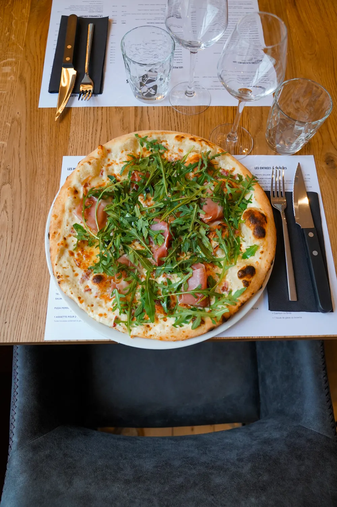
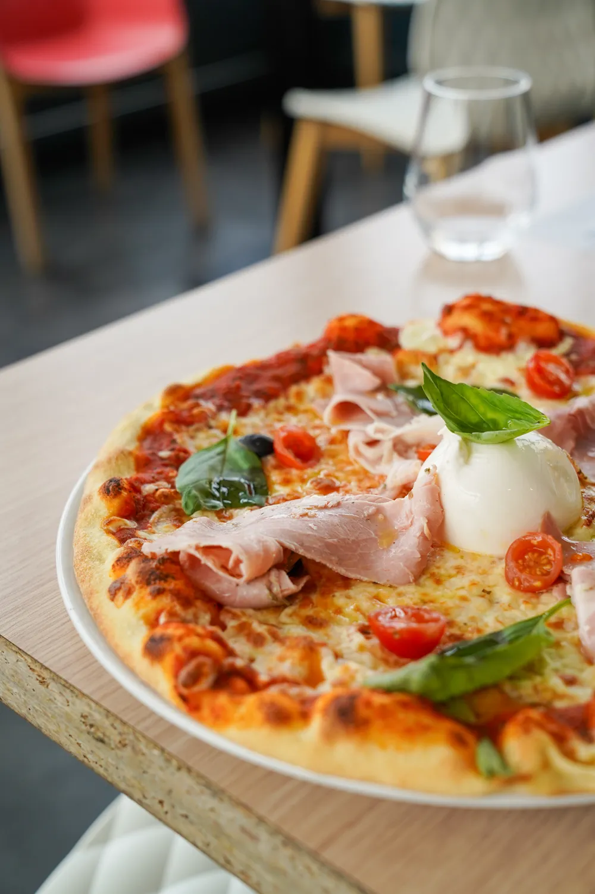
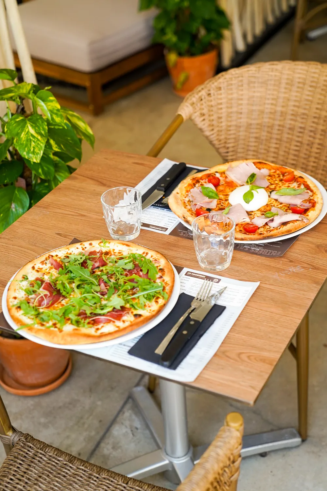
Le premier camion à pizza de Bourg-en-Bresse. Puis trois adresses.
Une histoire de famille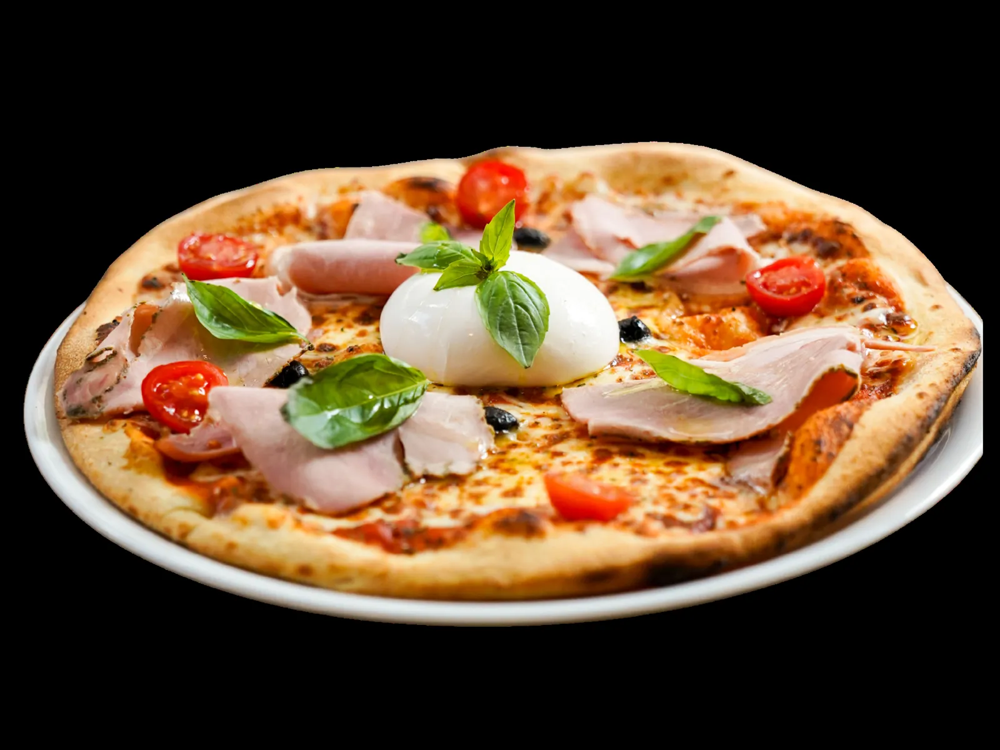
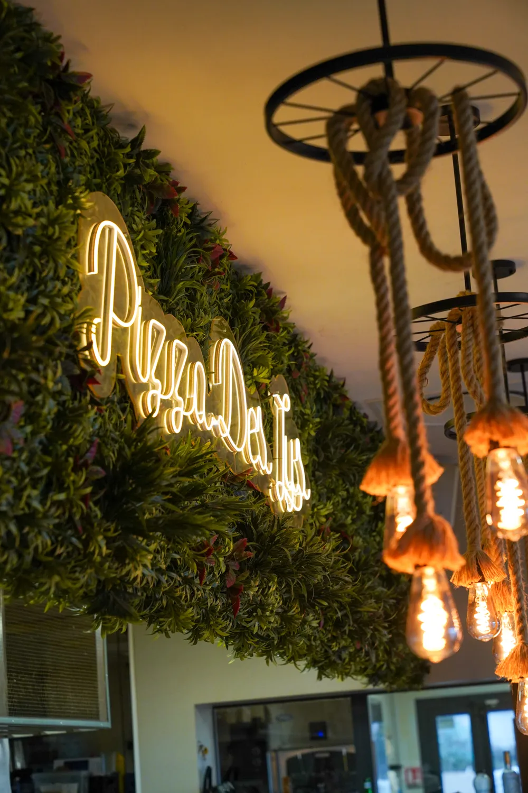
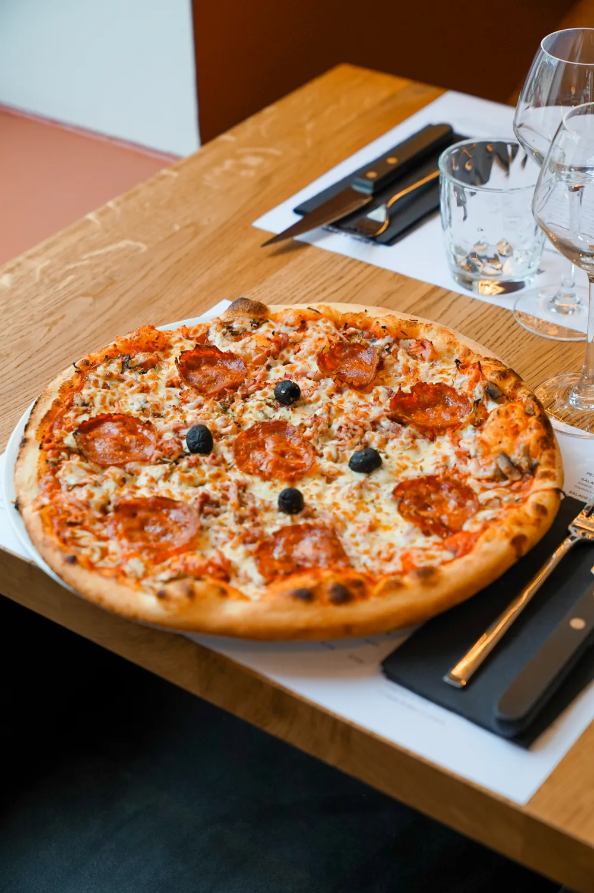

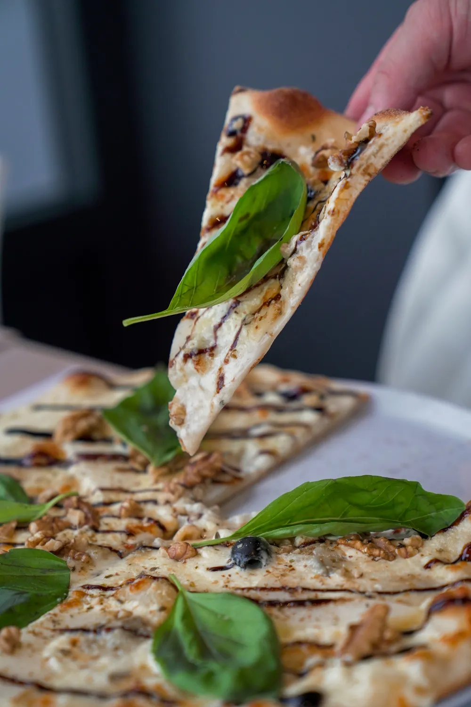
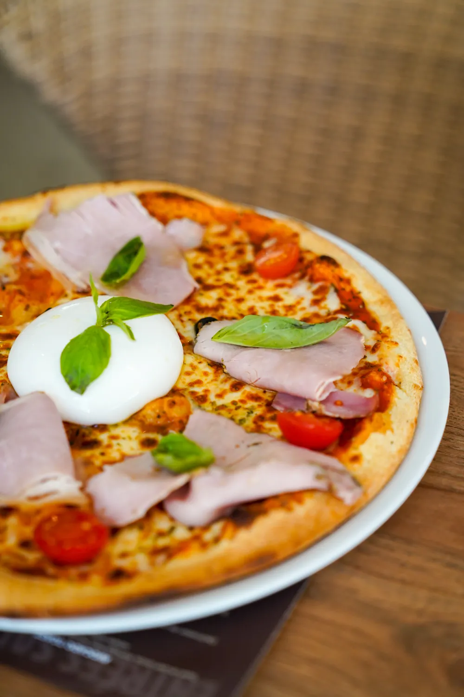

Avant d’être une maison… c’était un camion.
Testé, goûté, ajusté… encore et encore, jusqu’à la meilleure formule : une pâte moelleuse et croustillante, une sauce savoureuse, des ingrédients soigneusement choisis.
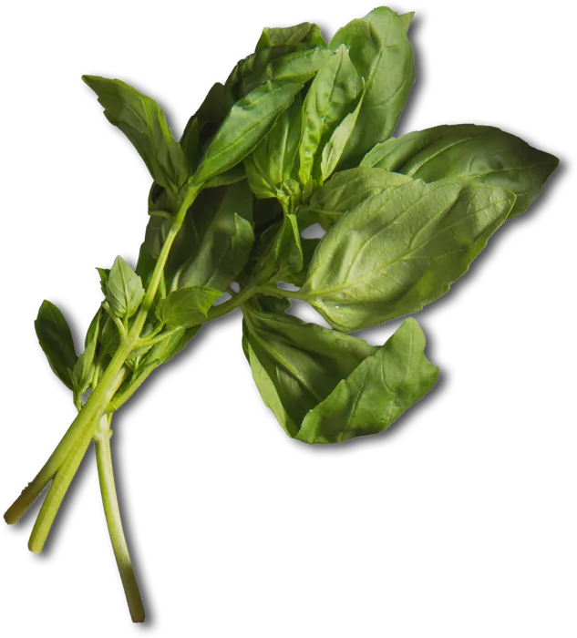
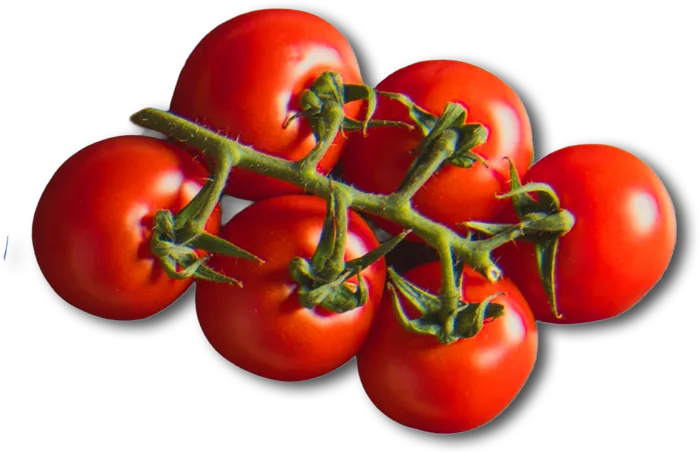
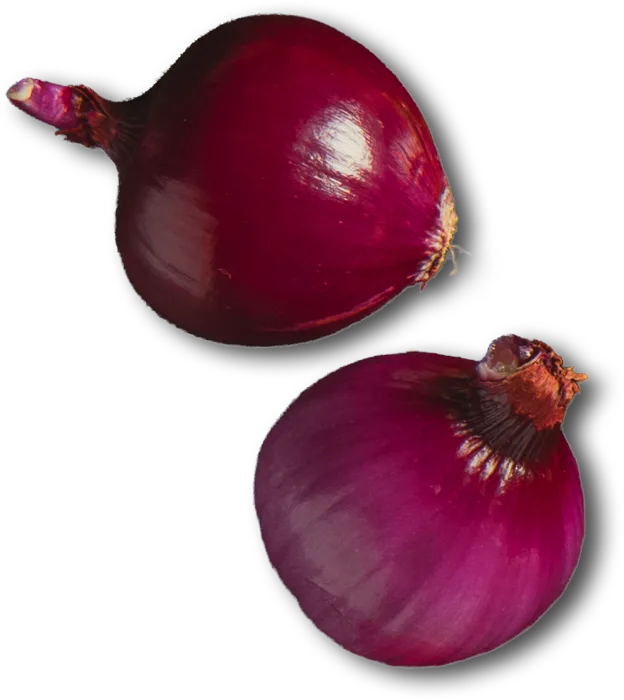



Le premier camion à pizza de Bourg-en-Bresse. Puis trois adresses.
Une histoire de famille
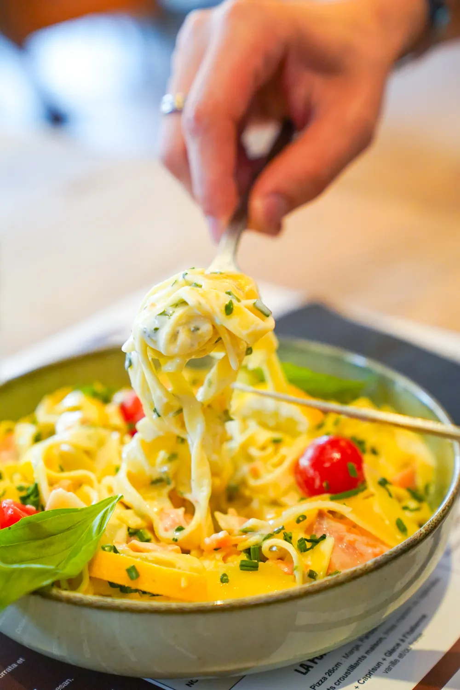


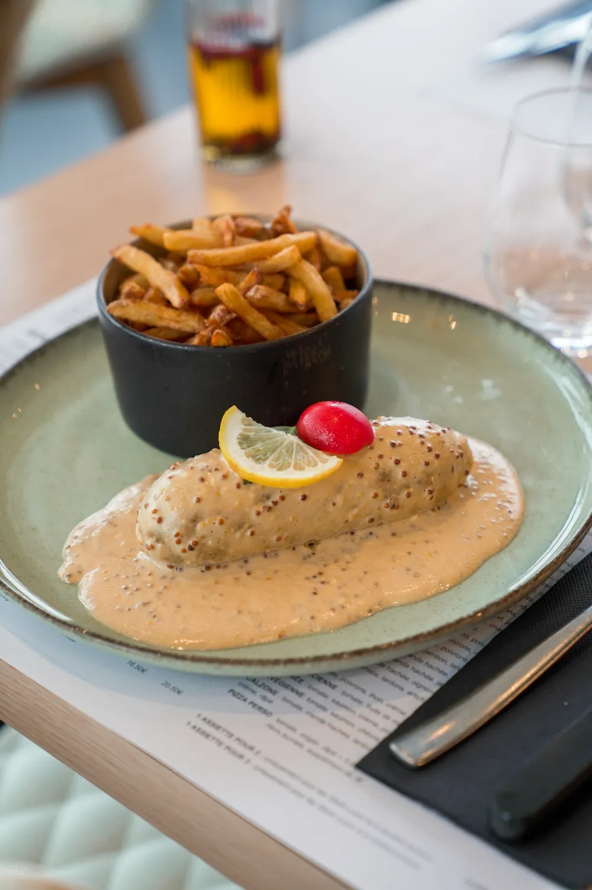

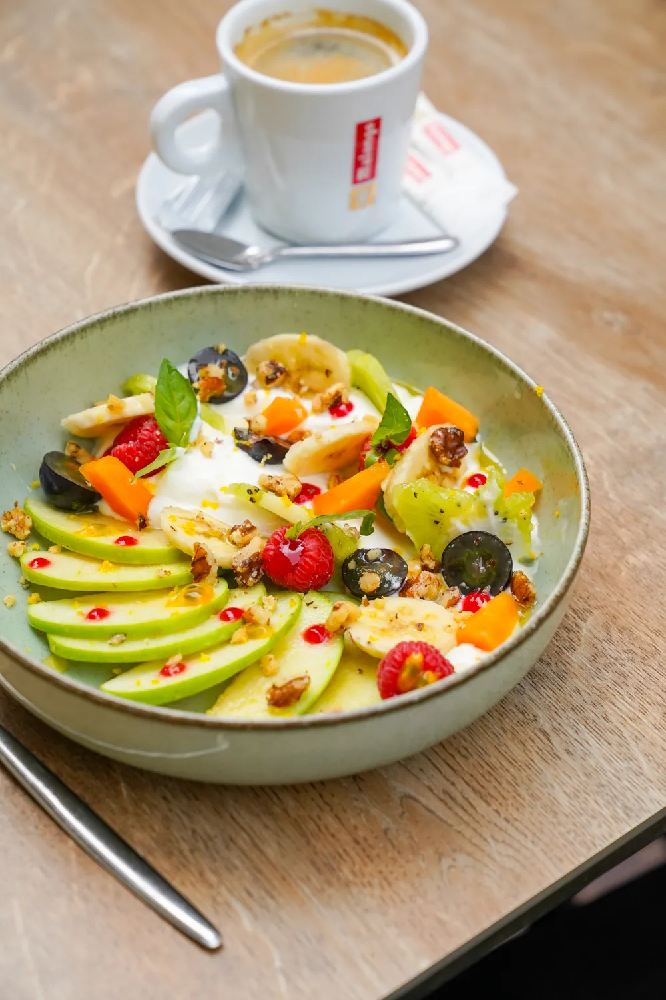

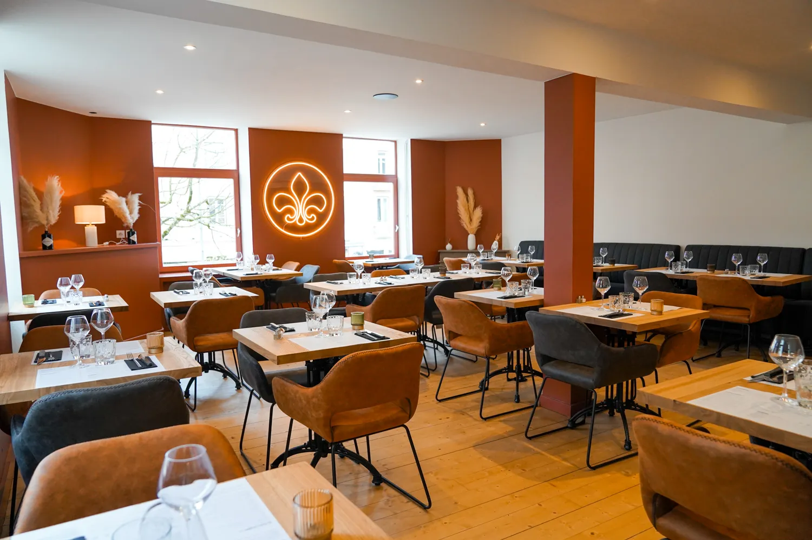
 BurgerPlats généreux
BurgerPlats généreux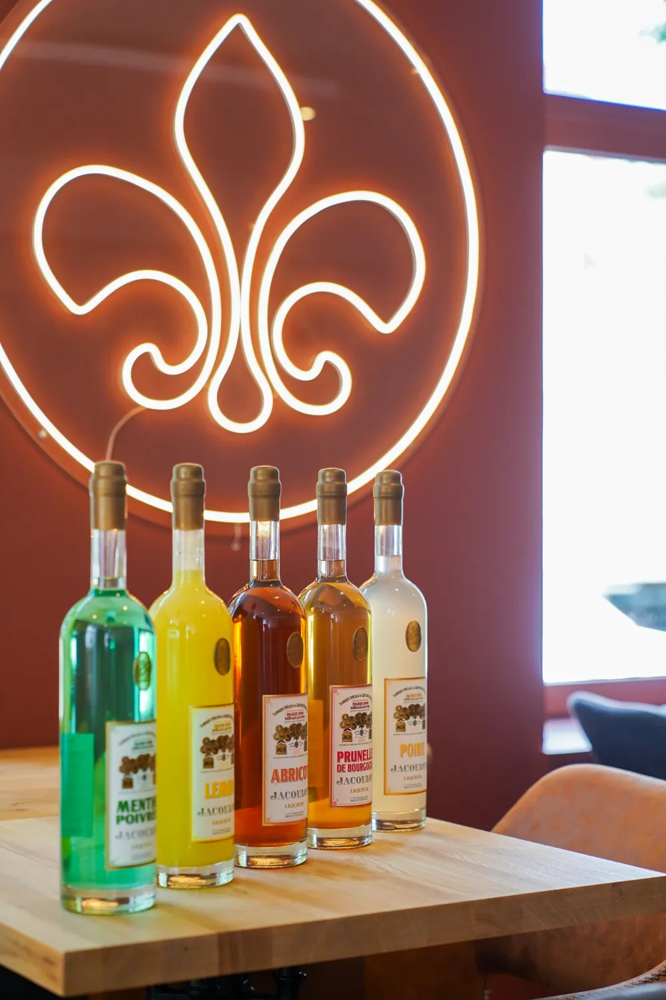
Côté barDemandez votre carte de fidélité dans nos restaurants. Ou : 3 pizzas achetées, une bouteille de limonade offerte. Offres non cumulables.
Commander en ligneCommander en ligne↗Le midi et le soir, dans l’une de nos trois salles.
Commandez en ligne ou par téléphone, passez la chercher.
Nos distributeurs autour de Bourg-en-Bresse, jour et nuit.
La 10e pizza est offerte avec votre carte de fidélité.